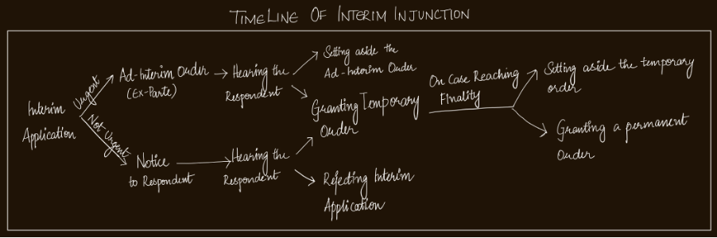
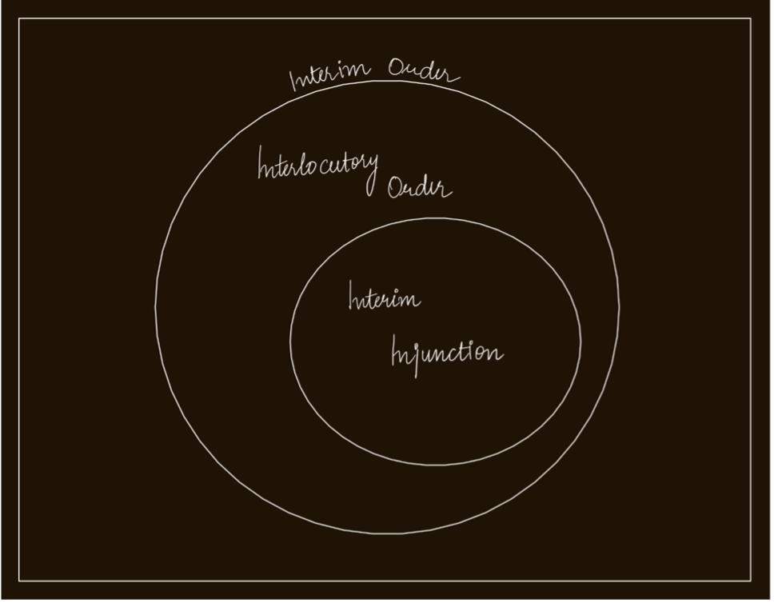

The term ‘Interim’ literally means ‘during the intervening time. There can be several circumstances during the pendency of a civil case (suit/petition) wherein one of the parties might seek immediate relief in absence of granting which he/she/they would be put at a disadvantage. Interim orders root from the equity principle – ‘Actus Curiae Neminem Gravabit’ which means ‘An Act of the Court shall prejudice no man’. Here the term ‘Act’ can be understood to cover both acts or omissions. So Interim Orders (herein referred as I.O) can be understood as temporary orders passed by the court which are valid only during the pendency of the civil case. Interim orders are equitable reliefs wholly at the discretion of the court.
TYPES OF INTERIM ORDERS
- Injunctions (Temporary)
- If A has not initiated the act of installing the gate, before which B petitioned the court for an injunction, the court here may pass a temporary injunction which shall restrict (negative order) A from installing the iron gate with the intention of preventing A from breaching his duty to not interfere with B’s right to use the pathway in dispute during the pendency of the suit.
- If A has already installed the iron gate, only after which B approaches the court, then here the court may a temporary injunction ordering A to remove the iron gate (a positive order) to prevent A from breaching his duty to not interfere with B’s right to use the pathway in dispute during the pendency of the suit. These positive injunctions are defined under S.39 of the Specific Relief Act as ‘Mandatory Injunctions’
- Interim/Interlocutory Application(I.A) separate from the pleading is filed in the court by the party seeking Interim Relief along with an affidavit in accordance with order 39, rule 1 of Civil Procedure Code.
- The court looks into such sought relief in the context of the circumstances of the parties. Indian Supreme court through the case M/S Gujarat Pottling Co.Ltd. & Ors vs The Coca Cola Co. & Ors1 has laid down circumstantial elements a court has to verify for granting an Interim Injunction.
- There is a Prima Facie dispute - A prima facie dispute is defined by the House of Lords in American Cyanamid v. Ethicon 2 is “the claim that’s not frivolous and vexatious; in other words, that there is a serious question to be tried”. The phrase ‘real question to be tried’ is further elaborated as – ‘any dispute is a question that can be tried unless the petitioner fails to discussion close any real possibility of succeeding at the trial’
- Balance of Convenience favours the granting of the Interim order - The Balance of Convenience is basically determining whether the granting or refusing of the order shall cause the least sum injury.
- Irreparable injury – The petitioner in addition to the above said elements shall also prove that the plaintiff would suffer an irreparable injury if his prayer for interlocutory injunction is disallowed.3
- A Prima Facie case
- Balance of Convenience – but has also laid down methods for determining the least sum injury. They are
- On being satisfied about the presence of the elements the court, in reference to the immediacy of the sought relief
- Either provides for notice to the respondents at the expenditure of the petitioner (if the relief is not very urgent) in accordance with order 39 rule 3 of Civil Procedure Code.
- Or moves forward to pass an Ad-Interim Injunction ex-parte.(if the relief is urgent in nature). Though CPC doesn’t explicitly mention the term ‘Ad-interim injunction’, it is provided for in the rule 3 of order 394. Allahabad High Court in the case Zila Parishad, Budaun And Ors. vs Brahma Rishi Sharma 5 has observed
- In case of the notice/summons being served to the respondent, he/she/they file their pleadings in reference to this I.A on hearing which the court grants or refuses an Interim Injunction.
- If any of the parties are aggrieved by the order, can approach the high court for an appeal in relation to this particular I.A separate of the civil case proceeding.
- Interlocutory Orders –
S.36 of the Specific Relief Act of 1963 defines an injunction as a ‘Preventive Relief’ granted at the discretion of the court. A nuanced yet essential aspect to be observed here is – by the term ‘preventive’ the legislation doesn’t restrict itself to orders that are negative in nature (order to refrain from doing something), but rather includes both positive or negative orders but with the intention of preventing the breach of a duty/obligation.
Illustration -
A intends to build an Iron Gate across the common pathway shared and in dispute between both A and B. Here Injunction can be both positive or negative orders in reference to the time they are claimed.
Therefore Injunctions are orders with the intention to prevent a person from committing the breach of a duty or obligation. Interim orders as the name suggest can only be on a temporary basis till the pendency of the civil case. Therefore Injunctions under the scope of Interim Orders can only be temporary injunctions. Though injunctions in general as defined under the S.37 of the Specific Relief Act can either be Temporary/Permanent. Only difference between them being, a permanent injunction can only be made decree at the end of the suit/petition and not during the pendency of a case.
The immediacy of Relief – Significance
The immediacy of the relief has a lot of significance in this process of granting an Interim Injunction. Some reliefs can be so urgent, wherein, if the court refuses or delays to pass such orders immediately the party would be put at a severe disadvantage or an irreparable injury. In such cases the court acting contrary to the principles of natural justice – ‘Audi Alterim Partem’ goes on to pass an order ex-parte (without hearing the other side). Such orders are called ‘Ad-Interim Injunctions’.
Procedure and Elements of an Interim Injunction
As explained above, the courts has the power to pass temporary orders which is valid until the period prescribed in the order or till the case reaches finality. The process of granting such an interim order is as follows
Common law Method –
The House of Lords in the American dynamic case had laid down slightly varied method with only two elements. The courts for granting an I.O shall only verify is there is
1. Can the injuries caused on granting the I.O be compensated with damages? (Shall be NO for granting)
2. If party would face greater uncompensatable injury than the respondent, if the I.A is refused ? (Shall be YES)
3. Is maintaining status quo unequally disadvantageous to the Petitioner ? (Shall be YES for granting)
4. Does petitioner have a stronger case ?
“An ad interim injunction may be granted under Order XXXIX or Section 151 in some cases.
…
An ex-parte order of injunction, like any order, shall be made under Order XXXIX will fall either under Rule 1 or Rule 2. There is no other provision under which such an order can be made.”
Whereas, when an ad-Interim Injunction is ordered, the respondent, on coming to know about the same on approaching the court, shall be given a chance to present his/her/their written statement in reference to this I.A. After hearing which, the court would either discharge/vary/set aside the interim order or maintain the order status quo by passing an temporary injunction.
Timeline -
The second type of Interim Order is Interlocutory orders. They are any Interim Order that falls outside of the scope of an Injunction. Interim order has a very large scope as any and every interim order that’s not a preventive relief can be an interlocutory order.
Illustration –
A, the plaintiff in a partition suit, petitions the court for appointing a commissioner to inspect his possession of the property that’s the subject matter of the suit, the court here shall pass an Interlocutory Order.
Several other illustrations of an interlocutory order are given below through interim order provisions
INTERIM ORDER PROVISIONS IN CIVIL PROCEDURE CODE
- Order 25 - Security of Costs
- Order 26 - Commissions
- Order 38 rule 1, 2 - Judgement preceded by Arrest
- Order 38 rule 5, 6 - Attachment before a judgement
- Order 39 - Injunction
- Order 39 - Interlocutory Orders
- Order 40 - Receiver
- Section 151 of CPC – inherent power of the Court to make such orders as may be necessary for the ends of justice or to prevent abuse of the process of the Court.
1. Rule 1 – Order to give within the time fixed by it security for the payment of all costs incurred and likely to be incurred by any defendant.
1. Rule 1 – Order to issue commission to examine witness due to their infirmity or sickness.
2. Rule 2,4, 4A, 5 – order to issue commission to examine witness in general, outside of local jurisdiction, within the jurisdiction, not within the country respectively.
3. Rule 9, 10A, 10B, 10C - order to issue commission to conduct local investigation, to conduct scientific investigation, for performance of a ministerial act, for the sale of movable property respectively.
4. Rule 11, 13 – order to issue commission to examine or adjust accounts, to partition an immovable property respectively.
1. Rule 1 – Order to arrest the defendant to bring him/her to the court to explain why he/she need not furnish security for prospective appearance.
2. Rule 2 – Order of the court to furnish security for prospective appearance before the court on failure to show the cause in accordance with rule 1.
1. Rule 5 – Order to furnish the security, when a defendant to delay or obstruct the execution of a decree tries to dispose or remove whole rot any part of the property
2. Rule 6 – Order to attach the property directly, if the defendant fails to comply with the order to furnish security in accordance with rule 5.
Rule 6 – Order sale of movable property that’s subject to decay
Rule 7 – orders for detaining, preserving, inspecting the subject matter of a suit – includes appointment of commissioners to execute these order.
INTERIM ORDER PROVISIONS IN OTHER LEGISLATIONS
- Section 36, 37 of the Specific Relief Act 1963
- Section 151 of the Civil Procedure Code of 1908
- Section 23 of Protection of Women from Domestic Violence Act of 2005
- S.125, 397 of the Criminal Procedure Code of 1973
- Section 24,25,26 of Hindu Marriage Act of 1955
- Section 9 of Arbitration and Reconciliation Act of 1996
CONSEQUENCE OF NONE-COMPLIANCE
Order 39 Rule 2A of the Civil Procedure Code provides for the consequences of Non-Compliance with an Interim Order provided by a competent court. It says the court on disobedience of such order may
- Order to attach the property of the non-complying party. Rule 2A(2) further states any such property shall not be attached for a period exceeding one year and if the disobedience still continues then the attached property may be sold. The proceeds of the sale shall be used to compensate the injured party to the extent of his/her/their loss, and remaining shall be returned to the non-complier.
- Order to detain such party in a civil prison for a period not exceeding three months, unless the court further orders his/her/their release.
CONCLUSION
Thus it can be rightly said Interim Orders form a very important part of the civil proceedings. The article has tried its best to explain and cover the vital aspects and procedures in and around an Interim Orders.
1 1995 AIR 2372, 1995 SCC (5) 545
2 (1975) 1 All ER 504
3 Ibid 1
4 Rule 3 - The Court shall in all cases, except where it appears that the object of granting the injunction would be defeated by the delay, before granting an injunction, direct notice of the application for the same to be given to the opposite party:
5 AIR 1970 All 376